Thermodynamics of the
spin-polarized unitary Fermi gas
[LR, Loheac, Drut, Braun arXiv:1807.04664]
[LR, Porter, Drut, Braun Phys. Rev. D 96, 094506, 2017]


ultracold Fermi gases:
why are they interesting?
superfluidity, controllable experiments, ...)
[Ketterle, Zwierlein '08]
[Giorgini, Pitevskii, Stringari '08]
[Bloch, Dalibard, Zwerger '08]


$a_S \gg n^{-1/3} \gg r_0$

density & temperature are only dimensionful scales in the system
universal scaling: $\ \ E = E_0\ f_E(\beta\mu), P = P_0\ f_P(\beta\mu) \cdots$

 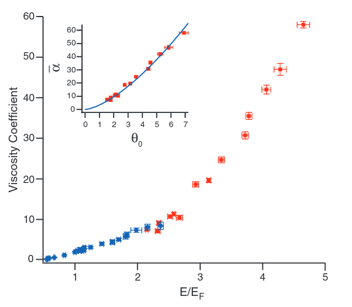
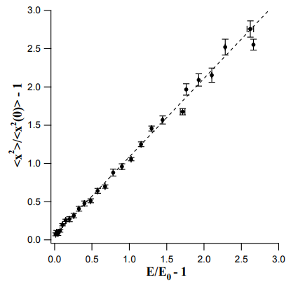
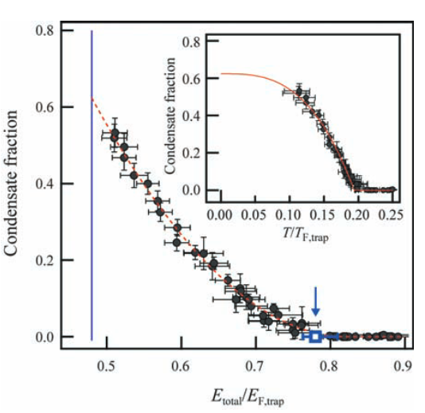
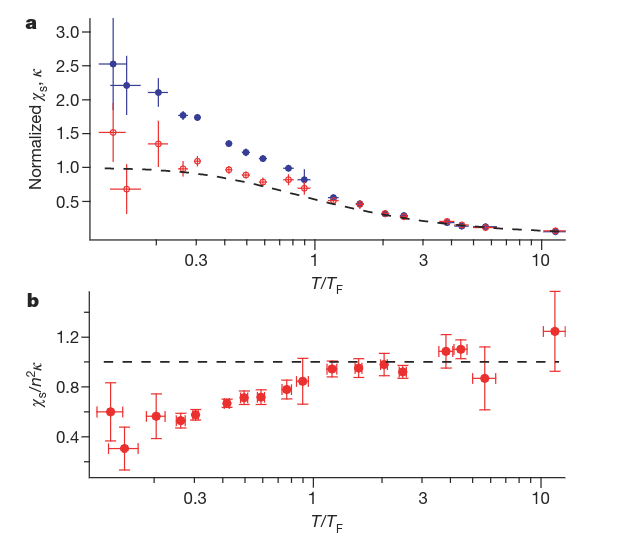
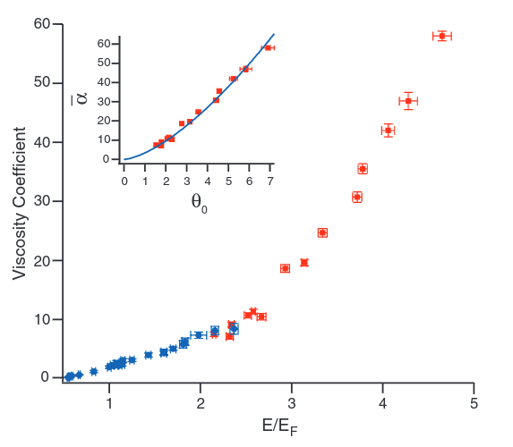
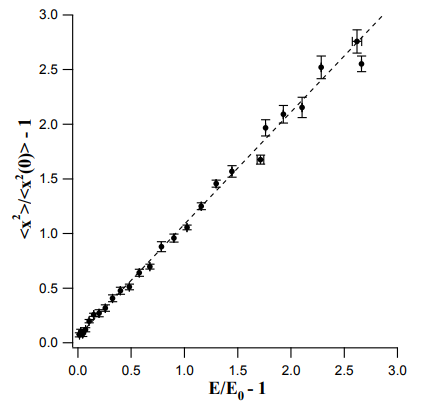
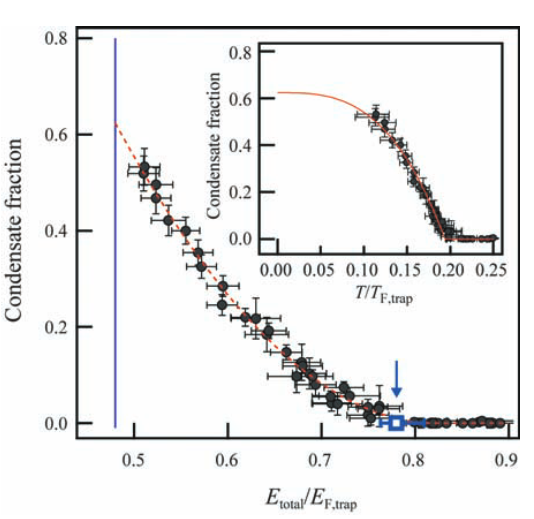
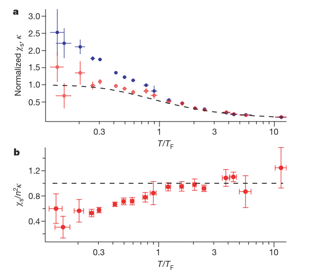

$h = \frac{\mu_\uparrow - \mu_\downarrow}{2}$
The plan:
ab initio thermodynamics of the UFG
method:
why is it challening and what to do about it?
key questions:
can we get the EOS for polarized systems?
how does $T_C$ change with polarization?


$\mathcal{Z} = \text{Tr}[{\mathrm e^{-\beta\hat{H}}}] = \text{Tr}[{\mathrm e^{-\beta(\hat{T}\ +\ \hat{V})}}]$
$\langle \mathcal{O} \rangle = \frac{1}{\mathcal{Z}}\text{Tr}[{\hat{\mathcal{O}}\,\mathrm e^{-\beta\hat{H}}}]$


+ Trotter decomposition
+ Hubbard-Stratonovich
transformation
$\mathcal{Z} = \int{\mathcal{D}\phi\ \det M_{\phi}^{\uparrow}\,\det M_{\phi}^{\downarrow}} \equiv \int{\mathcal{D}\phi\ \mathrm e^{-S[\phi]}}$

(create random auxiliary field configurations)

workhorse of lattice QCD: hybrid Monte Carlo (HMC) [Duane, Kennedy, Pendleton, Roweth '87]
$\langle\mathcal{O}\rangle = \int{\mathcal{D}\phi\ P[\phi]\,\mathcal{O}[\phi]}$
$P[\phi] = \frac{1}{\mathcal{Z}} \det M_{\phi}^{\uparrow}\,\det M_{\phi}^{\downarrow}$
- produce a random sample of the auxiliary field $\phi$
- evaluate the integrand with that value
- save result & repeat
- stop after enough samples and compute the average
statistical uncertainty $\propto 1/\sqrt{N}$
the sign problem

positive (semi-)definite if
any of these conditions applies:
$\mu_{\uparrow} \neq \mu_{\downarrow}$
$m_\uparrow \neq m_\downarrow$
$g > 0$

stochastic quantization: equilibrium distribution of a
$(d+1)$-dimensional random process is identified with
the probability measure of our $d$-dimensional path integral
andom walk governed by Langevin equation (Brownian motion):
$\frac{\partial\phi}{\partial t} = -\frac{\delta S[\phi]}{\delta\phi}\,+\,$ $\eta_t$
$\frac{\partial\phi}{\partial t} = -\frac{\delta S[\phi]}{\delta\phi}\,+\,$ $\eta_t$
$\langle \eta \rangle = 0$
$\langle\eta_t\eta_{t'}\rangle = 2\delta(t-t')$
(not physical)
[Aarts '09; Seiler '17]
[Loheac, Drut '17; LR, Porter, Drut, Braun '17]

use discrete Langevin equations
to produce a Markov chain:
$\phi_{n+1} = \phi_{n} + \Delta\phi$
$\Delta\phi_R = -\text{Re}\left[\frac{\delta S[\phi]}{\delta\phi}\right]\Delta t + \eta_t\sqrt{\Delta t}\,$ $ +\, 2\xi\phi_I\Delta t$
$\Delta\phi_I = -\text{Im}\left[\frac{\delta S[\phi]}{\delta\phi}\right]\Delta t\,$ $ +\, 2\xi\phi_I\Delta t$
a "regulator"

exact solutions available
$=$
excellent benchmark systems


outliers skew
expectation values!
('fat tail' problem)
no outliers,
no problems!

$p = \frac{N_\uparrow-N_\downarrow}{N_\uparrow+N_\downarrow}$
[Loheac,Drut '17]
[Loheac,Braun,Drut '18]
[LR,Porter,Drut,Braun '17]
[LR,Drut,Braun in preparation]

$ = \text{Tr} \left[e^{-\beta(\hat{H} - \mu \hat{N} - h \hat{M} )}\right]$
$\mu = \frac{\mu_\uparrow + \mu_\downarrow}{2}$
$h = \frac{\mu_\uparrow - \mu_\downarrow}{2}$
computationally challenging (but feasible)
$h = \frac{\mu_\uparrow - \mu_\downarrow}{2}$
 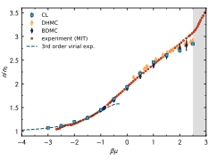
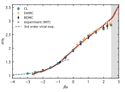
finite lattice $V = 11^3$
$\lambda_T$ increases
($\lambda_T \ll V^{1/3}$ must be fulfilled)

dilute gases: few-body correlations dominate
idea: describe the system as expansion in few-body clusters
$z = e^{\beta\mu}$
$\ln \mathcal{Z} = \mathcal{Q}_1\sum_{n}{z^nb_{n}}$
$+$ $+$ $+$ $+\ \ \cdots$
VE approaches the CL results order-by-order
VE deviates earlier for polarized systems
$m = n_\uparrow - n_\downarrow = \frac{\partial\ln\mathcal{Z}}{\partial (\beta h)}$
$p = \frac{n_\uparrow - n_\downarrow}{n_\uparrow + n_\downarrow} = \frac{m}{n}$
 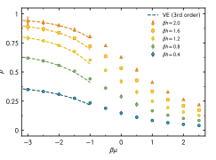
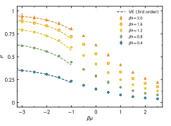


 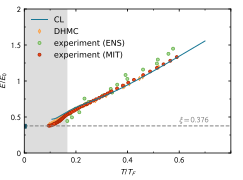
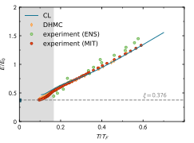
larger lattices,
improved operators
[Endres et al. '11; Drut '12]
$\kappa = \frac{1}{n}\left(\frac{\partial n}{\partial P}\right)_{T,V,h} = \frac{1}{n^2}\left(\frac{\partial n}{\partial\mu}\right)_{T,V,h}$
 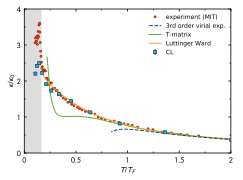
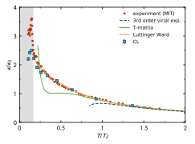
$T_C = 0.167 T_F$
sudden
increase of $\kappa$
indicates superfluid phase transition
features of curve
recovered with CL
quantitative disagreement
at low temperatures

weak dependence of the critical temperature on polarization indicated
challenging to extract precise $T_C$
$h = \frac{\mu_\uparrow - \mu_\downarrow}{2}$
$\chi = \left(\frac{\partial m}{\partial h}\right)_{T,V,\mu}$

Pauli susceptibility field independent at low field and $T$
UFG: dependence on $\beta h$ very similar to FG, but rescaled
$h = \frac{\mu_\uparrow - \mu_\downarrow}{2}$

large $T$: Curie's law $\chi \propto T^{-1}$
theory & experiment agree at large $T$
Pseudogap:
suppression of $\chi$ at $T > T_C$
[recent review: Jensen et al. '18]
low $T$: discrepancy between experiment and theory
CL: pseudogap possible
$T^*$ and $T_C$ seem to be very close
recap
spin polarized Fermi gases are hard to treat:
accessible with the complex Langevin method
complex Langevin compares well
with other methods wherever possible
EOS, magnetic properties & response accessible
for the UFG at $T>0$ and finite polarization
in ab initio fashion
what's next?
investigation of pair correlations for the UFG
effect of mass imbalance
on pairing behavior
search for inhomogeneous phases in 2D/3D
ab initio phase diagram for
mass- and spin-imbalanced Fermi gases

$p\cot\delta(p) = -\frac{1}{a} + \frac{1}{2}r_{eff} p^2 + \mathcal{O}(p^4)$
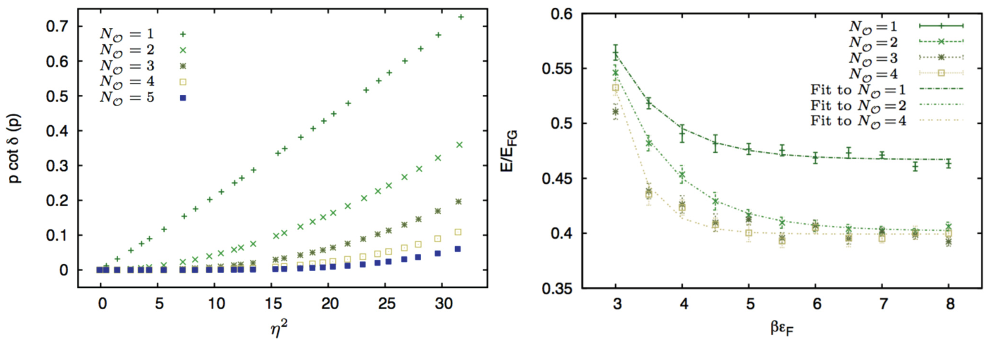scattering is tuned to reproduce unitarity at finite momenta